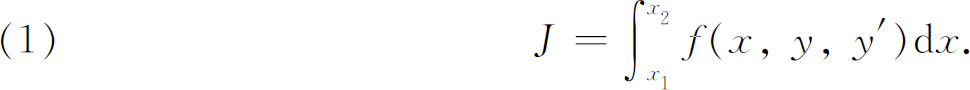
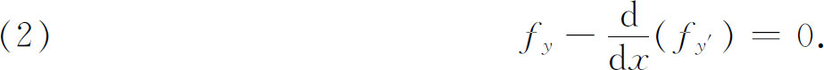
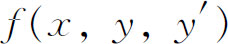
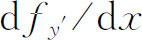
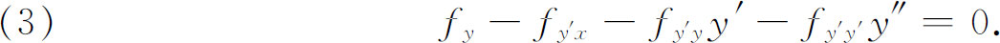
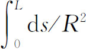
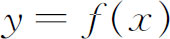
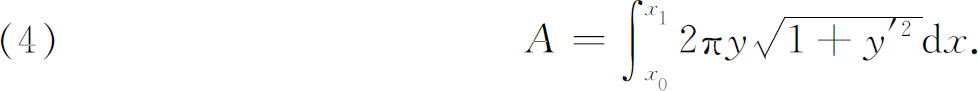

2．欧拉的早期工作
1728年约翰·伯努利向欧拉提议利用测地线的密切平面与曲面正交（第23章第7节）这个性质来得到曲面上的测地线的问题。这个问题使欧拉开始从事变分法的研究。1728年他解决了这个问题(9)。1734年欧拉推广了最速降线问题，使得极小化的量不是时间而是别的量，并且考虑了阻尼介质(10)。
然后欧拉着手寻找关于这种问题的更一般的方法。他的方法是詹姆斯·伯努利的方法的简化，用有限和代替问题中的积分，用差商代替被积函数中的导数，这样就把积分作成由弧y（x）的有限个坐标构成的一个函数。然后欧拉变动一个或几个任意选择的坐标，并计算积分中的变差。通过令积分的变差等于零并用一个粗糙的极限过程来变换所得到的差分方程，他就得到了极小化弧所必须满足的微分方程。
把上述方法应用到如下形式的积分：

欧拉成功地证明了使J取极大或极小值的函数y（x）必须满足常微分方程

这里的记号必须按如下意义去理解。就fy和fy′来说，被积函数

是自变量x，y和y′的函数。但是
必须理解为fy′关于x的导数，其中fy′通过x，y和y′依赖于x。就是说，欧拉的微分方程等价于
因为f是已知的，这个方程是关于y（x）的二阶常微分方程，一般说来还是非线性的。欧拉在1736年(11)发表的这个有名的方程迄今仍是变分法的基本微分方程。后面我们将会更清楚地看到，它是极大化或极小化函数必须满足的必要条件。
然后欧拉解决了包含特殊边界条件（如在等周问题中那样）的更难的问题，但是他的方法仍然是去解微分方程（3），以便先求得可能的极大化或极小化弧，然后从（2）或（3）的通解中的常数个数去决定他能应用什么边界条件。他解决的这些问题之一是由丹尼尔·伯努利1742年的一封信而引起他的注意的。丹尼尔·伯努利建议去找一根在两端受到压力作用的弹性杆的形状，假定杆经弯曲后所取曲线的沿线曲率的平方，即

，达到极小，其中s是弧长，R是曲率半径。这个条件相当于假定存贮在弯曲后的杆中的势能是最小的。当极大化或极小化积分中的被积函数比（1）的被积函数更复杂时，微分方程（3）不是正常的微分方程。在1736年到1744年间，欧拉改进了他的方法，对大量的问题求得了类似于（3）的微分方程。这些成果发表在1744年的一本书《寻求具有某种极大或极小性质的曲线的技巧》（Methodus Inveniendi Lineas Curvas Maximi Minimive Proprietate Gaudentes）(12)中。欧拉在这本书中的工作是繁琐的，因为他用了几何考虑，逐次差商与级数，还把导数变成差商，积分变成有限和。换句话说，他在最有效地利用微积分方面是失败了。但是欧拉以应用极为广泛的简单而又漂亮的公式结束他的书，而且，他处理了大量的例子，来证明他的方法的方便和一般性。其中一个例子是处理极小旋转曲面。这问题是：决定位于（x0，y0）和（x1，y1）间的平面曲线

，使得它绕x轴旋转所生成的曲面面积为最小。要求最小值的积分是
欧拉证明了函数f（x）必须是悬链线的一个弧段，这样生成的曲面叫悬链面。在欧拉1744年书的一个附录中，欧拉还给出了上面说过的弹性杆问题的一个确定的解。他不仅推导出杆的形状取椭圆积分的形式，而且还给出了不同类型端点条件的解。这本书立即给他带来了声誉，把他看作是当时活着的最伟大的数学家。
随着欧拉这本书的出版，变分法作为一个新的数学分支诞生了。但是广泛使用的是几何的论证，把几何和分析结合起来的论证不仅是复杂的，而且几乎不能提供一个系统的一般方法。欧拉是充分意识到这种限制的。